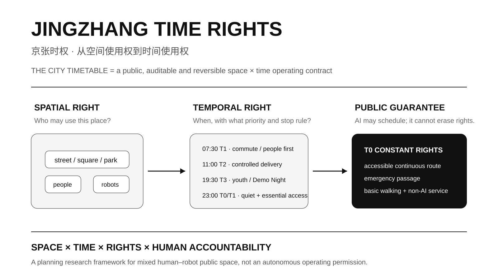
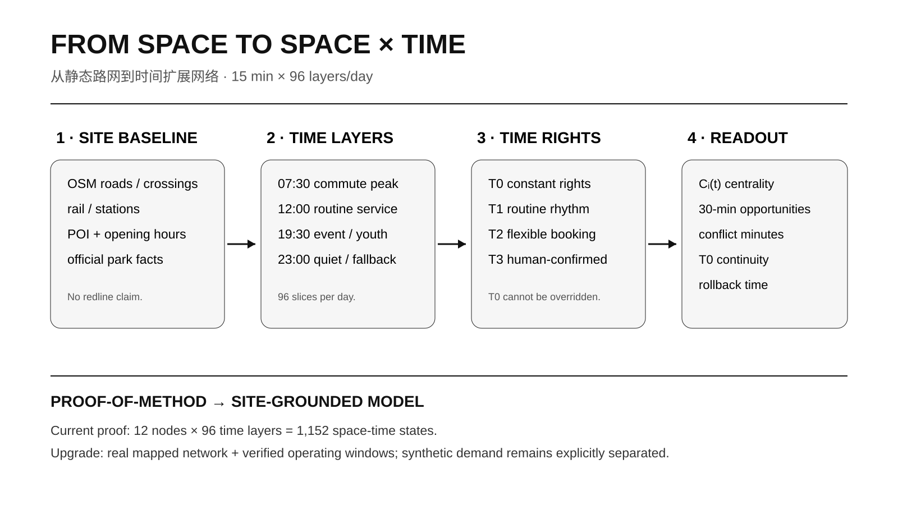
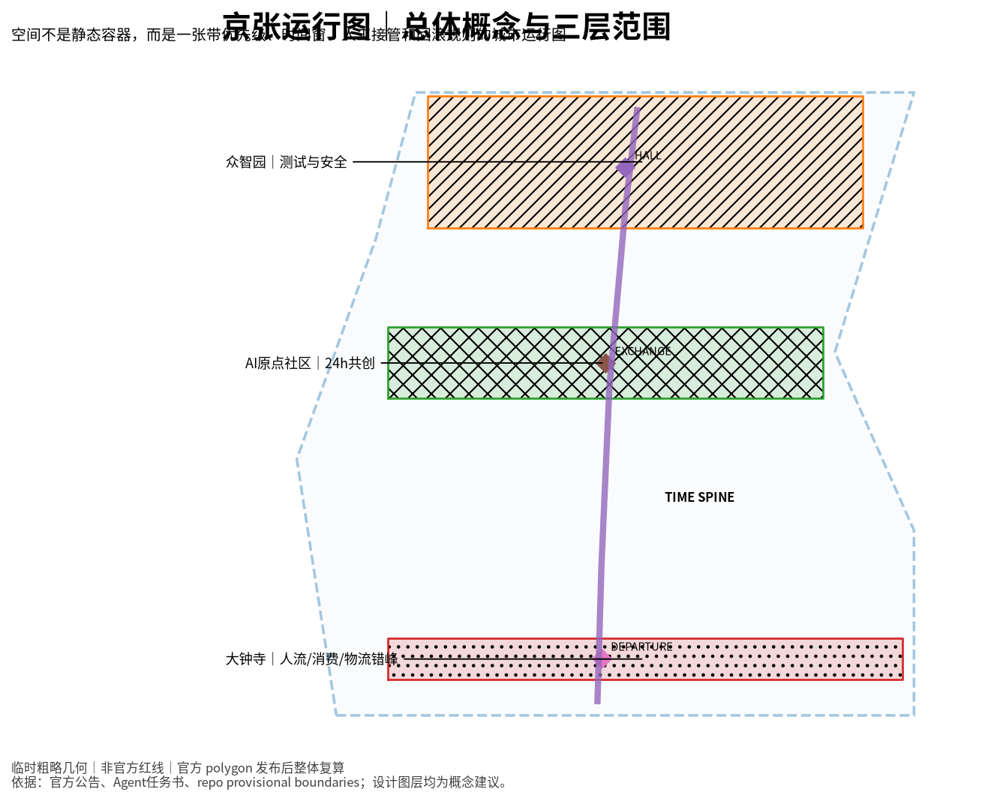
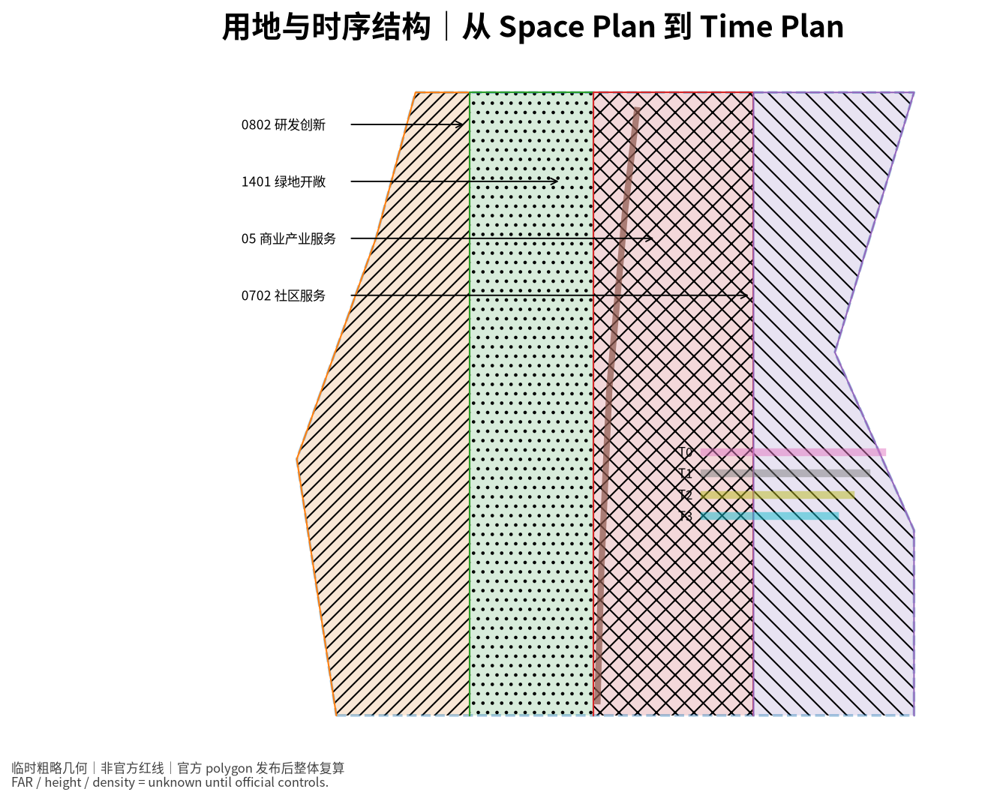
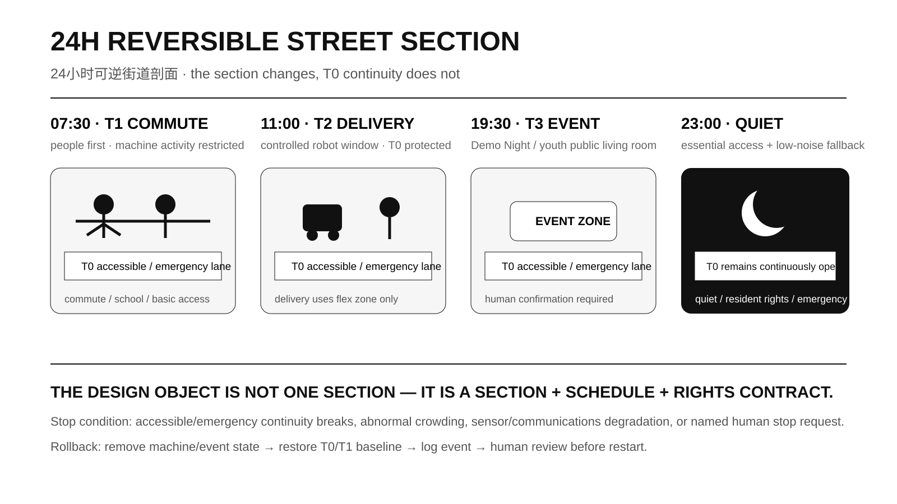
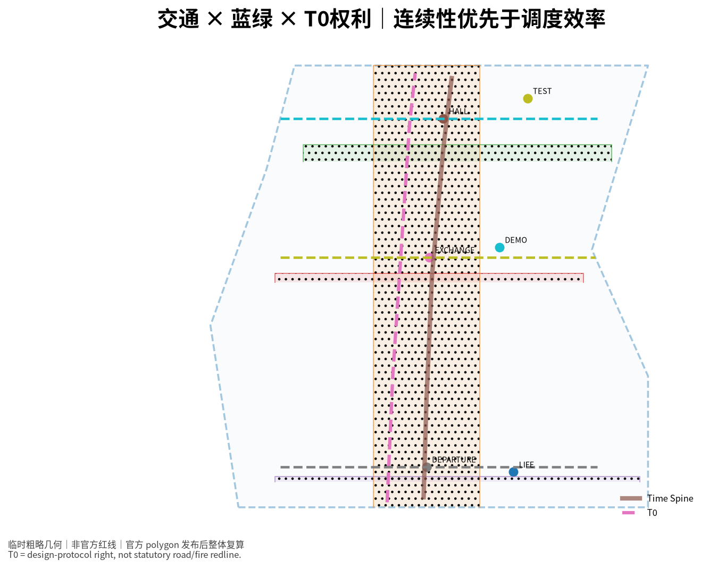

title: "京张时权：从空间使用权到时间使用权的 AI 城市时刻表" author_github: "andyxu12341" language: "zh" proposal_format_version: "2" bilingual_contract_version: "1" translation_file: "proposal.en.md" license: "COMMUNITY-DISPLAY-ONLY" summary: "以“时间使用权”作为核心规划变量，将铁路运行图转译为 AI 城市的 City Timetable。方案用 T0–T3 权利层级、TimeSlot Contract、12 个 AI+ 场景、三类重点区时间治理原型和 15 分钟时间扩展网络，把人、机器人、物流、青年活动与公共服务的空间冲突转化为可公开、可复算、可人工接管和可回滚的时序规则。" tracks: ["robotics-autonomous-mobility", "youth-friendly-public-space", "jingzhang-heritage-narrative"] scenarios: ["robot-delivery-low-speed", "ai-traffic-walkability", "ai-cultural-guide"] iteration: "v0.4-mainline-time-rights"
京张时权 · JINGZHANG TIME RIGHTS
从空间使用权到时间使用权｜THE CITY TIMETABLE
传统城市设计主要回答“什么功能放在哪里”。但在 AI 城市里，同一条街道、广场和公共界面会在一天中被通勤者、居民、学生、机器人、低速接驳、物流、夜间活动和应急系统反复争用。本方案把“时间使用权”提升为与空间使用权同等重要的城市设计变量。
京张铁路的历史价值不只是一条线形遗产，也包含“时刻、会让、优先、延误、恢复”的运行逻辑。本案保留“运行图”作为机制，但把方案主命题从容易撞题的“运行图”进一步推进为 TIME RIGHTS / 时间使用权：空间能否切换，不由 AI 自己决定，而由预先公开的权利、优先级、停止条件与人工责任共同决定。

当前成果为 open-call formal submission，不代表政府批准、法定规划、工程可行性、自动驾驶许可或现场实测绩效。
设计依据与资料清单
项目名称、三层范围、三处重点区域、任务与成果深度以官方征集公告为主控依据 [source:OFFICIAL-ANNOUNCEMENT]；智能体共创原则、六项 Agent 任务、场景卡、画像、地标与长期运营要求以任务书为依据 [source:AGENT-TASKBOOK]。城市设计、控规边界意识与用地分类分别参照仓库登记的官方标准本地快照 [standard:MOHURD-URBAN-DESIGN-MEASURES] [standard:MOHURD-CONTROL-DETAILED-PLANNING] [standard:MNR-LAND-USE-CLASSIFICATION-GUIDE]。
当前公开资料仍缺少可信的 official SITE_BOUNDARY、三处重点区精确 polygon，以及 FAR、建筑高度、密度、退线、道路红线、权属、市政、文保等正式控制。提交中的总体边界和重点区继续标记为 provisional_constraint、official_boundary=false，只用于生成、可视化、方法实验和临时自检 [source:BOUNDARY-SOURCE] [assumption:A-BOUNDARY-001]。
时间扩展网络方法参考交通可达性研究中以 time-expanded network 表达时刻变化、等待与可达机会的做法 [source:METHOD-TIME-EXPANDED-2026]；本案将其缩小为概念性城市公共空间 proof-of-method，而不是把交通论文的参数直接移植到北京。

三层范围工作框架
官方任务形成约 43.6 km² 统筹研究范围、约 11.4 km² 总体设计范围和 368.4 ha 三处重点区域 [source:OFFICIAL-ANNOUNCEMENT]。
- 43.6 km²：创新协同运行域。 研究高校成果、企业测试、公共服务、物流与全球活动在不同时间尺度上的关系。
- 11.4 km²：City Timetable 主系统。 建立恒定权利空间、日常节律空间、弹性预约空间与人工确认事件空间。
- 368.4 ha：三类时间治理实验。 众智园验证测试与安全；AI 原点社区验证 24h 共创与居民日常权利平衡；大钟寺验证轨道客流、消费、夜间活动和物流错峰 [metric:key_area_count]。

三层尺度由同一套 T0–T3 权利逻辑相连：上层研究城市活动节律，中层组织公共空间共享，重点区把规则落成可被检查、可被拒绝的空间原型。
统筹研究范围产业与未来城市研究
传统空间规划回答“什么在什么地方”，京张时权增加“什么在什么时候发生、谁优先、冲突时谁必须退出”。总体形成一条约 9.22 km 的概念时间主脊和三个重点区时序接口 [data:geometry/roads.geojson#ROAD-001] [metric:time_spine_length_m]。
本案对 6 个国际案例提取可迁移机制：NYC Open Streets 的明确时段切换与例外通行、LADOT Code the Curb 的机器可读路权、OMF Curb Data Specification 的开放数据结构、Singapore LTA/CETRAN 的受控自动驾驶测试、TfL School Streets 的固定公共权利时段、Paris Rues aux écoles 的青年友好公共空间 [source:CASE-NYC-OPEN-STREETS-2026] [source:CASE-LADOT-CODE-THE-CURB] [source:CASE-OMF-CDS] [source:CASE-SG-LTA-AV] [source:CASE-TFL-SCHOOL-STREETS] [source:CASE-PARIS-RUES-ECOLES]。
由此得到的核心结论是：AI 原生城市不是传感器更多，而是规则能够被人理解、被机器读取、被责任人复核，并在失败时安全退回。
在研究表达上，本案提出一条可继续深化为考研/学术研究的方法链：
Planning Question → Time Rights → TimeSlot Contract → Time-expanded Network → Spatial Prototype → Validation / Rollback
其中每一步都有机器可读文件或图件对应 [data:visual/assets/temporal_network.json] [data:visual/assets/timeslot_contract.json]。
总体设计范围城市更新与控规深度城市设计
本案用四级时权层替代“所有空间永远保持一种功能”的假设 [data:visual/assets/timeslot_contract.json]：
- T0 恒定权利 / Constant Rights：无障碍连续通行、应急、基础步行、必要非数字服务。不可预约、不可被 AI 覆盖。
- T1 日常节律 / Routine Rhythm：通勤高峰、学校时段、日常商业、公园慢行与居民基本出入。
- T2 弹性预约 / Flexible Reservation：机器人配送、低速接驳测试、社区课程、临时展陈、青年活动。
- T3 人工确认事件 / Human-confirmed Event：AI 大会、特殊测试周、Demo Night、大型路演和高客流活动，必须有具名责任角色。
TimeSlot Contract 的最小字段包括：空间单元、时间窗、允许主体、优先级、无障碍保护、人类责任人、停止条件、回滚动作、日志、非 AI fallback 与验证方法。P0 生命安全/恒定权利始终高于日常、预约和事件活动；堵塞唯一无障碍/应急通道必须直接拒绝 [metric:validator_negative_case_count]。

24h 可逆街道类型
空间设计不只停留在规则表。方案补充一个类型化街道剖面：建筑首层界面—T0 步行—弹性界面—绿化/停留—交通/服务。07:30 人流优先，11:00 可进入受控机器人/配送状态，19:30 转为青年 Demo Night，23:00 回到安静与必要服务；T0 贯穿四种状态，不随预约关闭。

该剖面仅为类型表达，不对应已测道路宽度或法定红线 [assumption:A-CONTROLS-001]。
重点区域详细设计
三处重点区不是复制同一套“AI 设施”，而是承担三种不同的时间治理实验 [data:geometry/key_areas.geojson#PROV-KEY-001] [depth:three_key_area_detailed_design]。
众智园：AI 时序测试场
验证机器人配送时间窗、低速接驳冲突降级、人群高峰自动退出、人工接管与日志回放。白天不是始终测试、晚上也不是始终开放：早高峰人流优先；日间安排受控测试；晚间转为公众观察和 Demo；夜间维护并保留 T0 必要通行 [metric:test_validation_scenario_count]。
北京 AI 原点社区：24h 共创时序社区
早高峰支持上学、工作和公共服务；日间学习与共创；晚间 Demo Night、轻运动和青年第三空间；夜间切回居民安静与必要服务。基本公共服务不依赖强制 App、人脸识别或持续个体轨迹，保留物理导视、纸质信息或人工服务的等价路径 [metric:non_ai_fallback_coverage]。
大钟寺：智能原生生活时序场
早晚客流高峰坚持人流/换乘优先；日间商业与日常生活；晚间青年文化与消费；夜间安排低峰补货/物流。高客流状态触发机器活动退出。由于 PROV-KEY-003 仍需官方数据复核，本阶段不深化确定性的站城四象限和工程落位 [assumption:A-DAZHONGSI-001]。


三处 AI 朝圣节点分别为：运行图大厅 TIMETABLE HALL、时间交换站 TIME EXCHANGE、百年发车台 CENTENNIAL DEPARTURE [data:geometry/public_space.geojson#PUBLIC-001]。它们既是公共空间，也是“规则看得见”的城市界面：显示当前状态、下一状态、T0 权利、人工责任和异常回滚。
AI 创新生态、人才画像与 AI+ 场景
机器可读场景文件包含 6 类用户画像和 12 个完整场景 [data:visual/assets/scenarios.json] [metric:scenario_count]：
- 机器人配送时间窗压力测试；2. 低速自动接驳冲突降级；3. 人群高峰自动退出；4. 人工接管与日志回放；5. 青年 Demo Night 可逆公共客厅；6. 免 App 公共服务导航；7. AI 文化导览 + 非数字等价路线；8. 夜间学习与轻运动切换；9. 场景开放预约与准入；10. 企业 Demo 时段共享；11. 活动日多主体排程；12. 公共时权表透明展示。
画像覆盖 AI 创业团队/开发者、高校学生与青年研究者、周边居民、无障碍与高龄使用者、商户与夜间服务从业者、物流/运维/应急角色。
12 个场景全部写入人工复核和非 AI fallback 字段，因此 human_override_coverage 与 non_ai_fallback_coverage 在设计合同层均为 100%；这不代表未来真实运营绩效 [metric:human_override_coverage] [metric:non_ai_fallback_coverage] [assumption:A-METRICS-001]。
用地、建筑规模与拆改留方案
geometry/land_use.geojson 使用可校验 land_use_code 表达概念功能结构，但明确不构成控规批准 [data:geometry/land_use.geojson#LU-001] [standard:MNR-LAND-USE-CLASSIFICATION-GUIDE]。FAR、正式高度、建筑密度和退线均保持 unknown [metric:floor_area_ratio]。
建筑层设置 6 个 candidate_retrofit 示意单元，只用于表达“优先存量适应性改造、可逆首层与公共界面”的设计方向，不对应已核实现状建筑。其概念基底合计约 88,629 m² [metric:building_footprint_area_sqm]。不得据此推断拆迁量、新建量或确定性工程规模 [assumption:A-CONTROLS-001]。
本轮深化把“建筑—街道”界面加入时序设计：首层收发、候取、共享会议、夜间学习等可承担不必长期占道的功能，减少把所有动态需求都压到路缘和步行空间。
交通、轨道、市政与公共服务设施
道路层用 ROAD_CENTERLINE 表达概念时间主脊和三个时序接口，不是现状道路中心线或工程定线 [data:geometry/roads.geojson#ROAD-001]。T0 权利约束使用 REGULATORY_CONTROL 枚举承载方案内部规则，但所有 feature 都标明 geometry_role=design_proposal、official_boundary=false，不是法定道路/消防红线 [data:geometry/constraints.geojson#CONST-001]。
T0 概念连续线合计约 12.33 km，核心含义是让无障碍、应急和基础步行在任何排程模式下保持连续 [metric:t0_constant_rights_corridor_length_m]。

市政与新基建把公开运行状态、机器可读规则、人工接管、异常日志、非数字备份视为数字基础设施的一部分；能源、算力、传感器、通信、市政管线和消防容量仍待专业资料与专项论证 [assumption:A-CONTROLS-001]。
时间扩展网络 proof-of-method
为避免“时间规划”只停留在口号，本案构造 12 个概念节点 × 96 个 15 分钟时片的 time-expanded network [data:visual/assets/temporal_network.json]。节点来自六个概念存量改造单元与六个时序公共空间；步行连边只用于方法演示，需求权重和机器运行窗均为显式设计假设 [assumption:A-TEMPORAL-MODEL-001]。
比较“未协调基线”和“Time Rights 排程”，保持三处弹性空间的机器服务总时长均为 10h/日，只把测试/物流从人群高峰尽量转移到低峰：
- 高峰人机冲突时长：10h → 3h，减少 70% [metric:peak_conflict_reduction_ratio]；
- 高峰三处可逆空间可用率：63.0% → 88.9%，提升 25.9 个百分点 [metric:peak_flexible_space_availability_gain_pp]；
- 30 分钟高峰时序可达机会：3.70 → 3.91，提升 5.7% [metric:temporal_reachability_gain_ratio]；
- 机器服务总时长仍为 10h/日，不是通过“少运行”换取结果 [metric:machine_service_hours_preserved]。

这些数值只证明规则在给定假设下的内部行为，不证明真实城市绩效；现场客流、真实机器人需求、道路宽度、OD、活动时段与 official polygon 到位后必须重新计算 [assumption:A-TEMPORAL-MODEL-001]。
蓝绿空间、公共空间与城市风貌
城市风貌不把“未来科技蓝光”当作 AI 的唯一视觉语言，而将铁路运行图的时间轴、站点、会让线和恢复逻辑转译为导视、铺装、公共信息和活动系统 [standard:MOHURD-URBAN-DESIGN-MEASURES]。
概念绿地层由遗址公园时序绿廊与三处重点区弹性开放绿地组成。按临时总体边界和 EPSG:4548 复算，当前 green_ratio=31.5058%；它是概念图层比例，不是 approved green ratio，也不代表遗址公园官方边界 [metric:green_ratio]。
六处可逆公共空间包括三处朝圣节点和三处测试/青年/智能生活空间，概念面积约占临时范围 1.4959% [metric:public_space_ratio] [metric:reversible_public_space_count]。设计重点不是追求这个比例，而是证明同一空间能够在不牺牲 T0 权利的前提下拥有多个时间模式。
文化叙事由“百年发车—开放会让—智能运行—可恢复城市”升级为“空间权利 + 时间权利”双层叙事：铁路历史提供共享时间的文化原型，中关村提供开放创新与成果转化，AI 新文化提供透明规则、责任边界和人机协作。
更新项目清单、实施政策与分期计划
本节实施顺序由分期图层与场景数量共同校核 [data:geometry/phasing.geojson#PHASE-001] [metric:scenario_count]。
- 近期：完成 TimeSlot Contract、公开时权表界面、T0 无障碍/应急校核、免 App 导航、Demo Night 可逆客厅、24h 类型街道试验，以及不进入普通公共道路的受控机器人测试。
- 中期：在 official polygon 与专业条件补齐后，以真实人流/活动/物流时段替换 proof-of-method 假设，重新计算时序可达性与冲突。
- 远期：只有在交通、安全、规划、市政、文保、权属与运营审批路径清晰后，才讨论更高等级的具身智能公共运行与空间改造 [assumption:A-ROBOTICS-001]。
年度运营包括 Open Timetable Week、Urban Agent Scheduling Challenge、Robotics Low-speed Test Week、Jing-Zhang Demo Night 和 Annual Time Rights Review。它们用于反复验证冲突规则、公众体验和运营责任，而非仅作为营销活动。
指标体系、面积复算与合规矩阵
本节数值以结构化指标文件、空间图层和时间扩展模型复算为准 [metric:site_area_sqm] [data:geometry/green_space.geojson#GREEN-001] [data:visual/assets/temporal_network_results.json]。
| 指标 | 当前值 | 限制 |
|---|---|---|
site_area_sqm |
11,412,825.386 m² | provisional boundary，非 official redline |
key_area_count |
3 | 数量来自任务要求，几何仍 provisional |
building_footprint_area_sqm |
88,628.915 m² | 6 个概念 retrofit 单元 |
green_ratio |
31.5058% | 概念绿地层比例，不是规划绿地率 |
public_space_ratio |
1.4959% | 仅六处时序公共空间 |
time_spine_length_m |
9,216.69 m | 概念时间主脊，不是工程线位 |
t0_constant_rights_corridor_length_m |
12,327.509 m | 设计协议权利线，不是法定红线 |
scenario_count |
12 | 机器可读场景卡 |
test_validation_scenario_count |
4 | 产业测试验证场景 |
human_override_coverage |
100% | 设计字段覆盖率 |
non_ai_fallback_coverage |
100% | 设计字段覆盖率 |
peak_conflict_reduction_ratio |
70% | 场景化 proof-of-method |
peak_flexible_space_availability_gain_pp |
+25.9 pp | 场景化 proof-of-method |
temporal_reachability_gain_ratio |
+5.7% | 12节点/15分钟模型，非实测 |
machine_service_hours_preserved |
10h → 10h | 两方案机器服务时长保持不变 |
floor_area_ratio |
unknown | 等待官方控规与 official polygon |

公告、Agent 1–6、专业标准、设计深度、图层、指标和风险假设之间的追踪关系分别见 compliance_matrix.json、standard_matrix.json、design_depth_matrix.json [depth:metrics_recalculation]。
风险、版权与合规说明
- 边界：official polygons 缺失，所有 provisional-derived 结果在官方数据发布后整体复算 [assumption:A-BOUNDARY-001]。
- 控规与工程：FAR、高度、密度、退线、道路、市政、文保、权属等不自行推定 [assumption:A-CONTROLS-001]。
- 具身智能：测试不等于许可；公共部署需另行满足安全、交通、监管和运营要求 [assumption:A-ROBOTICS-001]。
- 大钟寺：provisional 几何复核完成前，不把粗略矩形深化成确定性的站城四象限方案 [assumption:A-DAZHONGSI-001]。
- 定量模型：time-expanded network 的需求权重、运行窗、节点和步行图均是设计实验输入，不是现场数据；不得把 -70%、+25.9pp、+5.7% 写成真实项目绩效 [assumption:A-TEMPORAL-MODEL-001]。
- 指标：设计合同覆盖率与真实运营事故率、冲突拒绝率、满意度严格分开 [assumption:A-METRICS-001]。
- 隐私与公平：基本公共服务不依赖人脸识别、持续个人追踪、强制 App 或单一供应商。
- 版权：核心图、时间扩展网络图和图纸均由本案结构化数据程序化生成，不复制其他投稿、企业 Logo 或未经授权图像；详见
report/copyright_statement.md。 - 状态：本成果只称作 open-call formal submission；在维护者合并、专业复核或后续实施前，不使用“获批、入选、已实施”等表述。
参考资料
- 百年京张 AI 创新带城市设计国际方案征集资格预审公告 [source:OFFICIAL-ANNOUNCEMENT]
- 面向全球智能体开展百年京张 AI 创新带城市设计开源征集任务书 [source:AGENT-TASKBOOK]
- Repo public source registry [source:SOURCE-REGISTRY]
- 城市设计、控规与用地分类官方本地参考 [standard:MOHURD-URBAN-DESIGN-MEASURES] [standard:MOHURD-CONTROL-DETAILED-PLANNING] [standard:MNR-LAND-USE-CLASSIFICATION-GUIDE]
- NYC DOT Open Streets / LADOT Code the Curb / OMF CDS / Singapore LTA AV / TfL School Streets / Paris Rues aux écoles：机制案例，详见
sources.json - Udhayasekar, Srinivasan & Chilukuri (2026), time-expanded transit accessibility method：只用于方法学参照 [source:METHOD-TIME-EXPANDED-2026]